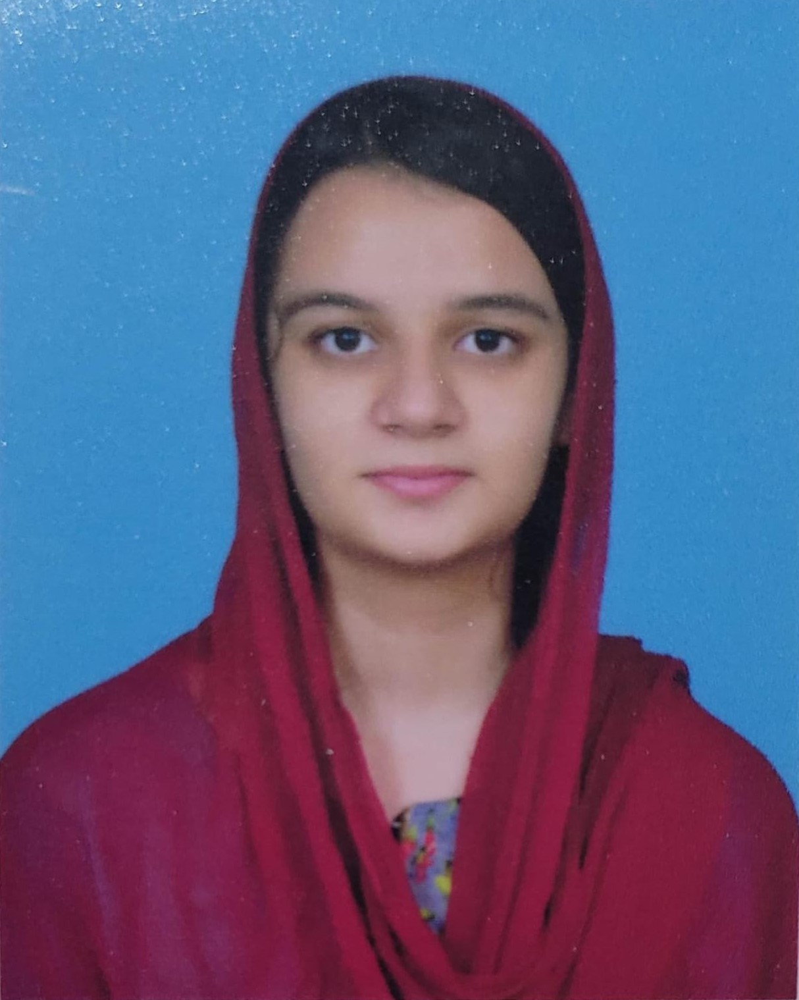

SahulatRescue+
Java | JavaFX | AI-Based Decision Logic | OOP

Java Developer | Full-Stack Developer | AI & Networking
Third-year Computer Science undergraduate at COMSATS University Islamabad (CGPA: 3.84/4.00) with strong hands-on expertise in Java application development — having built multiple production-quality Java and JavaFX applications covering AI decision systems, real-time GUIs, event-driven programming, and game logic. Additionally experienced in full-stack web development (ASP.NET Core MVC, Flask), relational database engineering (SQL Server), and computer networking (Azure, Cisco). Proven ability to independently design and deliver complete end-to-end software solutions across multiple domains. Passionate about Java, Artificial Intelligence, and building technology that solves real-world problems.
Java | JavaFX | AI-Based Decision Logic | OOP
Java | JavaFX | OOP Design Patterns
ASP.NET Core MVC (C#) | Entity Framework Core | Microsoft SQL Server | Bootstrap 5 | JavaScript
Python | Flask | HTML/CSS/JavaScript | Rule-Based AI | Expert Systems | Forward Chaining
Email: fa24-bcs-115@cuilahore.edu.pk | Github: github.com/ZainabHussain-115 | LinkedIn: linkedin.com/ZainabHussain